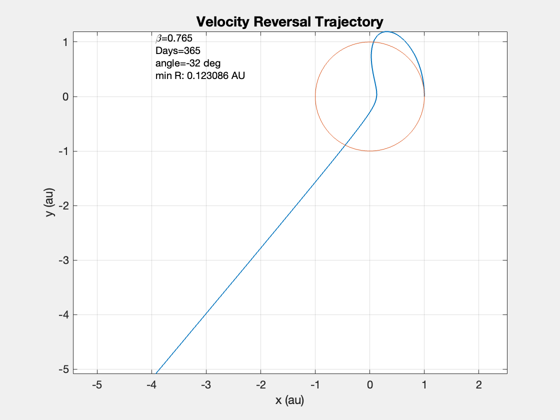

Planar heliopause mission simulation.
Can use either a built-in specular sail force disturbance function or the full sail disturbance function. Uses the FlatSail CAD model. The sail characteristic acceleration is about 4.6e-6 km/s2.
Functions demonstrated:
RHSHelio2DOrbit
HeliopauseSailAngle
FlatPlate
------------------------------------------------------------------------ See also Constant, Plot2D, TimeLabl, JD2000, HeliopauseSailAngle ------------------------------------------------------------------------
Contents
%------------------------------------------------------------------------------- % Copyright (c) 2005,2006 Princeton Satellite Systems, Inc. % All rights reserved. % Since version 7. %------------------------------------------------------------------------------- %%%%%%%%%%%%%%%%%%%%%%%%%%%% % User Parameters %%%%%%%%%%%%%%%%%%%%%%%%%%%% % Two choices of disturbance model: % 1 (specular) % 2 (full) disturbModel = 1; %%%%%%%%%%%%%%%%%%%%%%%%%%%%
Build the sail model
% Load the flat plate model %-------------------------- d = struct; d.g = load(fullfile('SailData','FlatSail.mat')); % Scale the sail %--------------- %d.g.component(1).v = d.g.component(1).v; %[d.g.component(1).a, d.g.component(1).n, d.g.component(1).r, d.g.component(1).b] = PolygonProps( d.g.component(1).v, d.g.component(1).f ); area = CrossSection(d.g); lightness = LoadingToLightness(d.g.mass.mass/area); fprintf('Sail side length: %g m\n',sqrt(area)); fprintf('Spacecraft mass: %g kg\n',d.g.mass.mass); fprintf('Lightness: %g\n',lightness); % Disturbance model data %----------------------- d.distModel.aeroOn = 0; d.distModel.albedoOn = 0; d.distModel.solarOn = 1; d.distModel.magOn = 0; d.distModel.radOn = 0; d.distModel.ggOn = 0; d.distModel.planet = 'Sun'; d.jD0 = JD2000; % The maximum number of days for the numerical integration %--------------------------------------------------------- maxDays = 365; % Constants %---------- mu = Constant('mu sun'); aU = Constant('au'); % km lbFToN = Constant('lb force to n'); lbFToKg = Constant('lb force to kg'); c = Constant('speed of light')*1e3; secInDay = 86400; mToKm = 1/1000; % Build the data structure for the differential equations %-------------------------------------------------------- d.tEnd = maxDays*secInDay; d.mu = mu; d.m0 = d.g.mass.mass; % kg d.laserOn = 0; % The following are for the specular model only %---------------------------------------------- %area = 350*d.m0; p = 1367; % W/m2 acc0 = 2.0*(p/c)*area/d.m0; % m/s^2 d.accel = acc0*mToKm*aU^2; % prescale by AU^2 % Sail pointing angle function %----------------------------- d.sailAngleFun = @HeliopauseSailAngle; % Select the disturance model %---------------------------- switch disturbModel case 1 % This uses the specular model d.forceModel = 'specular'; otherwise % This uses the full disturbance model d.forceModel = 'full'; end disp('HeliopauseSimulation:') disp(['Disturbance type: ' d.forceModel])
Sail side length: 223.607 m Spacecraft mass: 100 kg Lightness: 0.765 HeliopauseSimulation: Disturbance type: specular
Integrate
% Set up ode113 %-------------- oDEOptions = odeset( 'abstol', 1e-12, 'reltol', 4e-8, 'events', 'off' ); % Initial conditions. States are [r;dr/dt;drTheta/dt] %---------------------------------------------------- x = [aU;0;sqrt(d.mu/aU);0]; % [r;u;v;angle] [t, x] = ode23('RHSHelio2DOrbit', [0, d.tEnd], x, oDEOptions, d ); x = x'; angle = HeliopauseSailAngle( x, t ); [t, tL] = TimeLabl( t' );
Plot the results
% Plot the orbit %--------------- cA = cos( x(4,:) ); sA = sin( x(4,:) ); rX = x(1,:).*cA/aU; rY = x(1,:).*sA/aU; minR = min(Mag([rX;rY])) Plot2D( rX, rY, 'x (au)', 'y (au)','Velocity Reversal Trajectory' ) hold on % Plot the initial orbit th = linspace(0,2*pi); plot(x(1,1)*cos(th)/aU,x(1,1)*sin(th)/aU); axis equal text(min(rX),max(rY),... sprintf('\\beta=%g\nDays=%g\nangle=%g deg\nmin R: %g AU',... lightness,maxDays,angle(1)*180/pi,minR),... 'VerticalAlignment','top') yL = {'Sail Angle (deg)' 'u (km/s)' 'v (km/s)'}; Plot2D( t, [angle*180/pi;x(2,:);x(3,:)], tL, yL, 'Sail Angle and Velocities' ); %[a, e, rP, rA] = RV2AE( r, v, mu ); %-------------------------------------- % PSS internal file version information %-------------------------------------- % $Id: 934c0a25332bb4fc5e70423fe04509cf4eb5f391 $
minR =
0.12309
